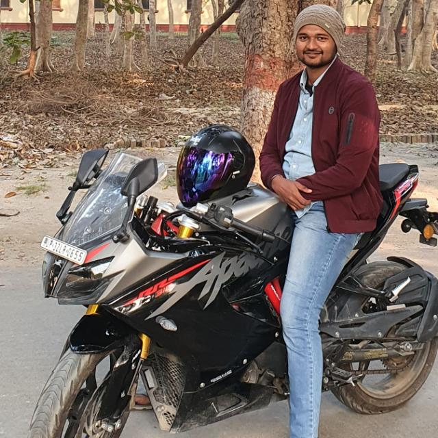
Prabhat Bhaiya
Bhaiya is one of the most dazzling personalities I have met. He has a very rare combination of humour, a caring personality and a dynamic leader. He understands the essential qualities of being social more than anyone I have ever met. I have learnt a lot about management under him. I am glad to have him as a senior.
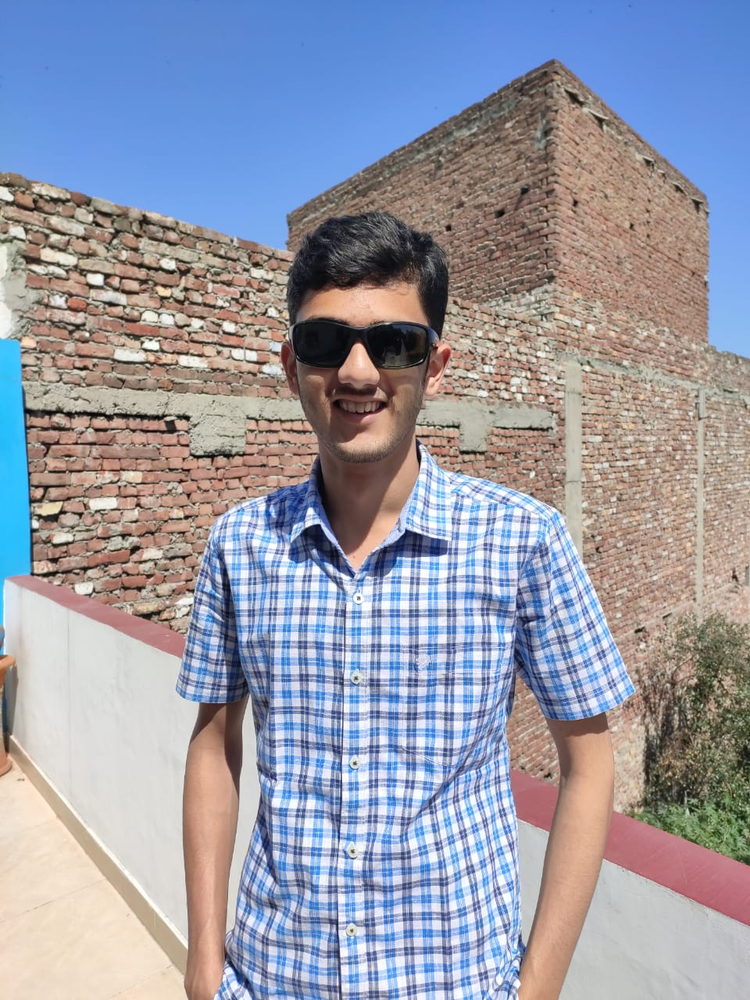
Kushagra Bhaiya
Bhaiya is amongst the most knowledgeable people I have met. He is fun-loving, caring and has the rare ability to rise to an occasion of need. I have recieved so much from him that I am gratefull to have him as a senior.
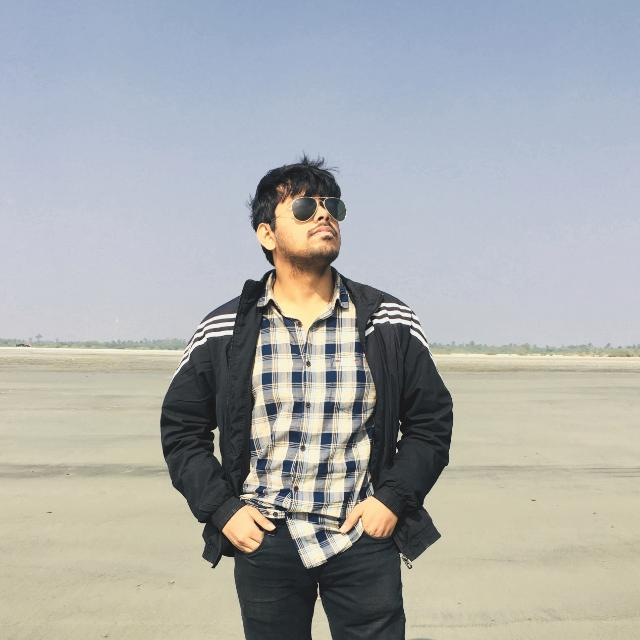
Utsav Bhaiya
Bhaiya is amongst the most enthusiastic people I have met. Despite being so highly qualified, he still finds time for his juniors and has fun and also guides. His clarity in his field is much more than even the interviewers I have met so far. Apart from his technical and product skills, he is also a classic flute player, making him an all rounder. Despite having to make a lot of effort, he never misses to join us in organising YES!+ courses at insititute.
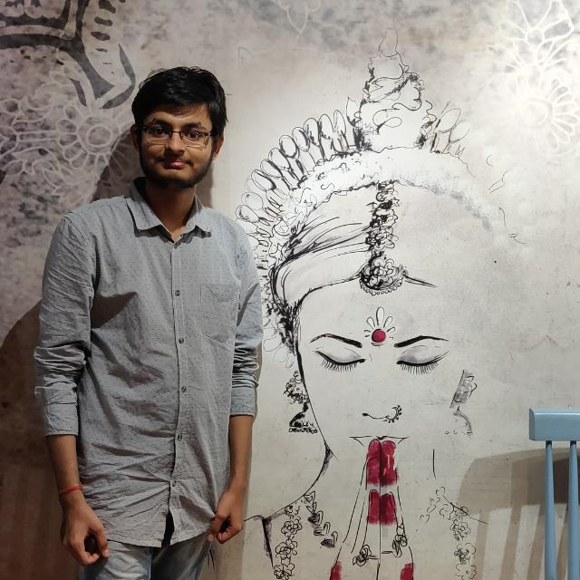
Satwik Bhaiya
Satwik Bhaiya is amongst the most caring bhaiyas I have had. He has aspirations for his juniors in the long term, and is always guiding in the right direction. He has covered a lot in the varied fields that he has worked on, and is willing to pass on that info to us all. He is the only senior I have on whose judgements and descision I can fully know to be flawless. Thankful to Gurudev to have him with me in this crucial period of life.
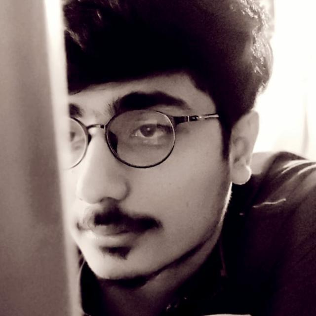
Vivek Bhaiya
Vivek Bhaiya was amongst the first seniors who guided me in my career. He is the reason I got motivated to achieve high in career. He was also the instructor of my first daily sadhana sessions in college, and so my sadhana is streghtened due to him. I am so gratefull to him for helping me achieve so much in my personality and career.
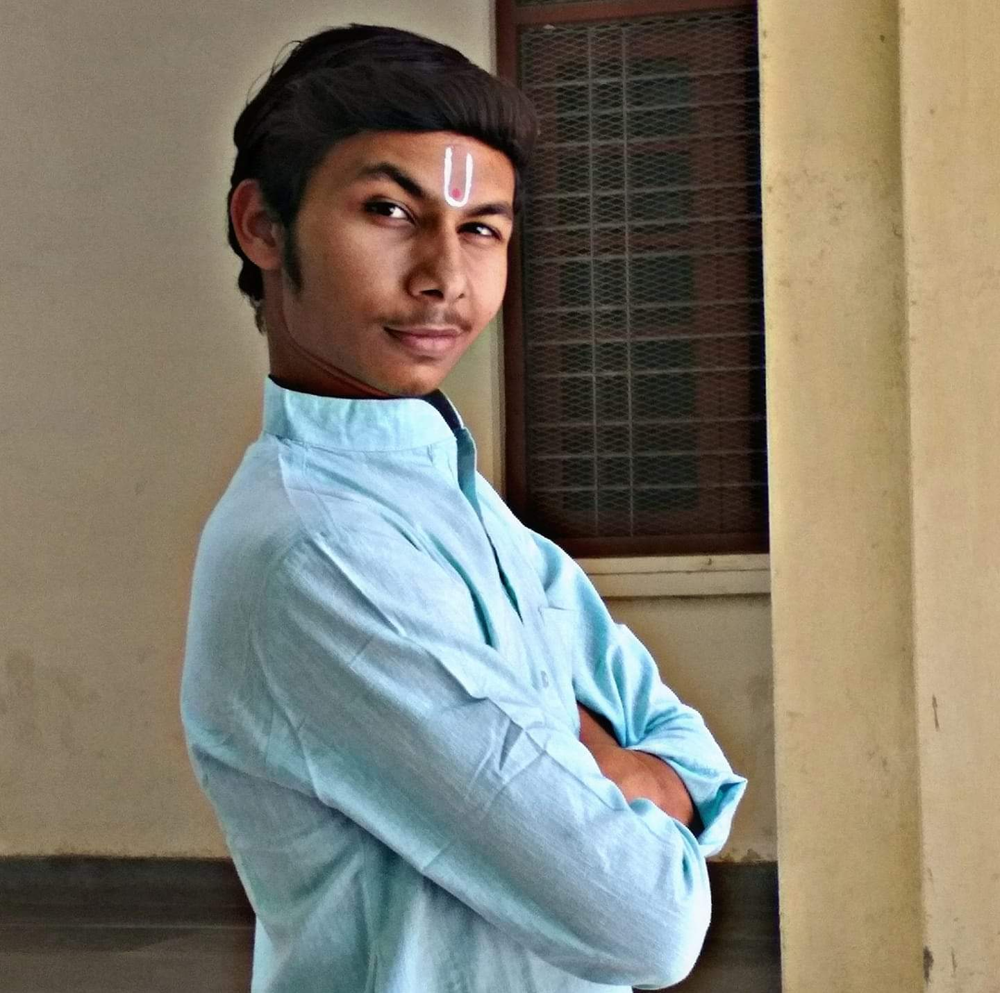
Ratnawat Bhaiya
Bhaiya is amongst the most cool people I have met yet. He has very practical and valueable knowledge and is still very fun loving. Always that I have seen him, he is ever smiling, and always brings an environment of lightness wherever he goes. Having organised many courses, he knows a lot about interpersonal communication, and I see that I have a lot to learn form him.
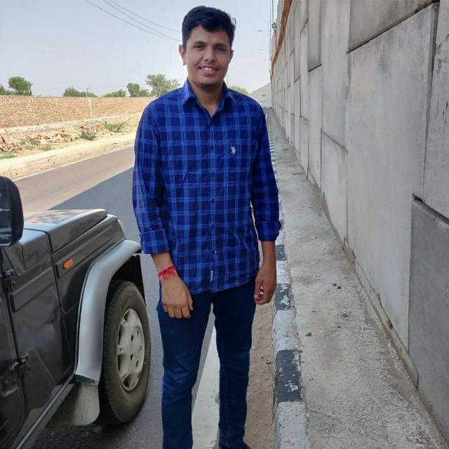
Virendra
Virendra is a person with high self esteem. He has a rare combination of being motivated by high dreams and being dedicated and disciplined. He is a planned out person and is very practical. I find myself sometimes having learnt a lesson or two from him. I am sure he will definitely achieve something worthwhile.
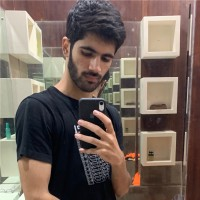
Raghav Soni
Raghav is one of the most busy perple I have ever met. His achivement list at his stage are something of my dream. He is a very determined, focused and hardworking person, and despite so much that he has acomplished and dreams to accomplish, he finds time to engage in volunteering activities. I am incredibly honoured to be a friend of him.
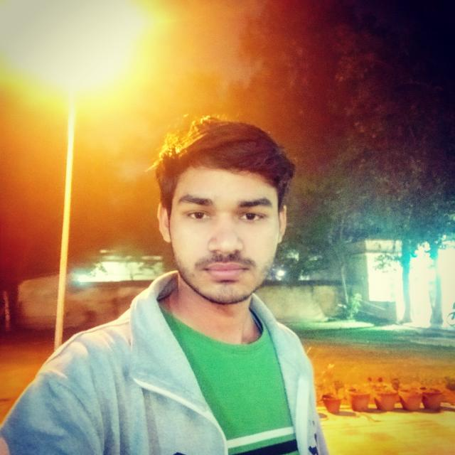
Sandeep
Sandeep is one of the people who have realised the value of spiritual path on his own, and has a good enough understanding of himself. He is a natural seeker, a quality that guarantees growth in all aspects of life. He is unaware of what all he can achive and has great untapped potential. I see myself in him, and have big hopes from his career.
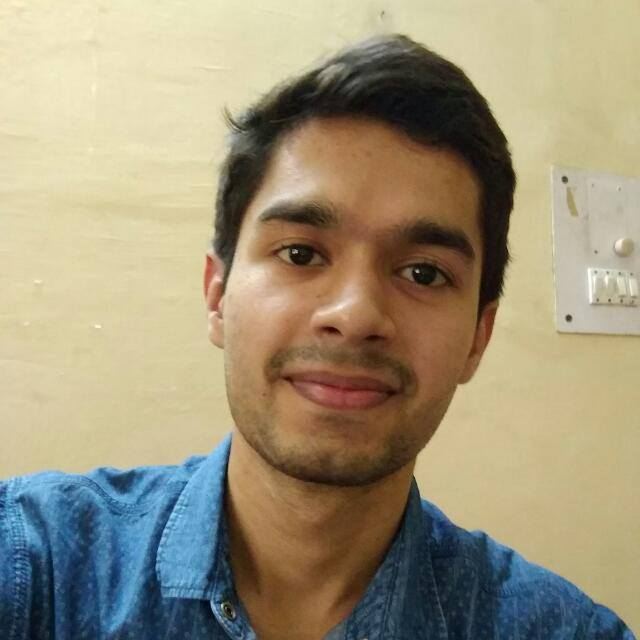
Shashank Bhaiya
Bhaiya is what I must say to be my short-term goal in spirituality. His personality is something I could only understand after Advanced Course. Along with being an example of what spirituality can help in achiving a pleasant and peacefull state of mind, he also is a live example of the popular phrase in gita : Yogah Karmasu Kaushalam. I aim to transcend him in this matter.
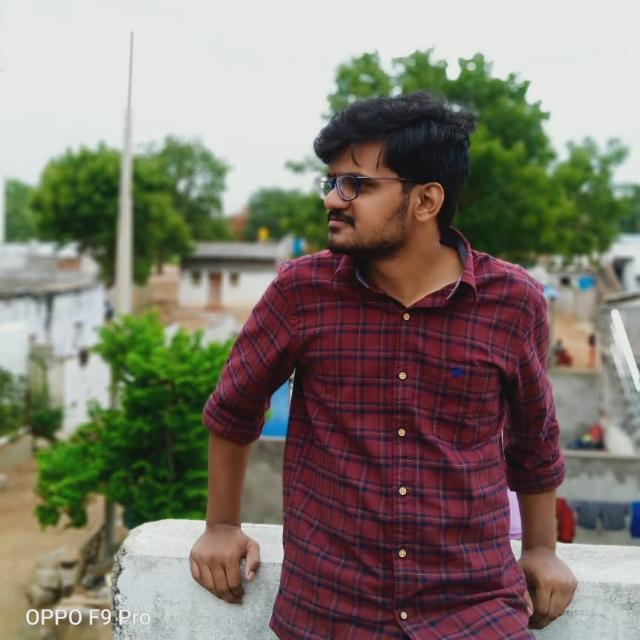
Ravi Verma Bhaiya
Ravi Verma bhaiya is a dynamic personality like I have hardly seen. He is a student and is also an Art Of Living teacher, which makes him the best guide I have found so far in youth issues. Hardly anyone's words of advice have reached me as well as his has. When it comes the time to act, bhaiya fills the environment with such an energy that works round the clock.
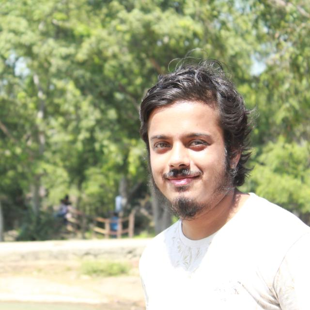
Indraneel Bhaiya
Indraneel bhaiya is one of the most active people of our college. He has a wonderful management ability. He has the responsibility of the largest council of our institute, makes time for marketing and stock trading, and still finds time to help us in organising courses. Bhaiya is always ready to take challenges without a second's warning. His awesome intercommunication skills are something I am a huge fan of.
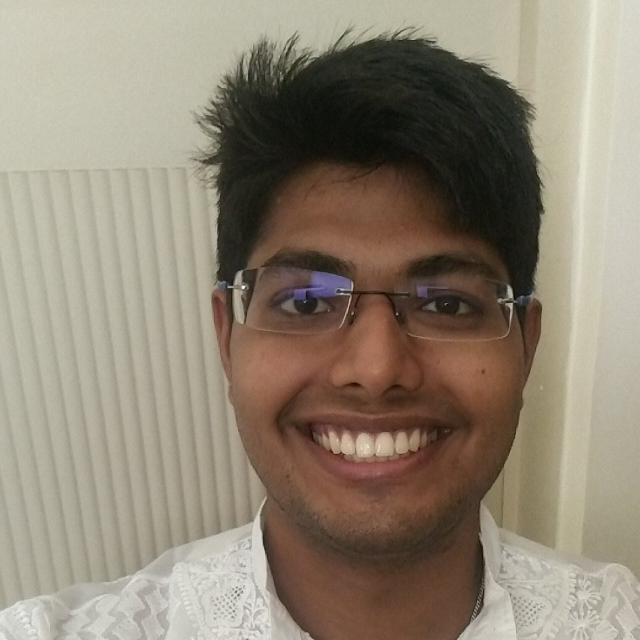
Siddhi Bhaiya
Siddhi bhaiya is the first Art Of Living members I have met at college. Across time, I have recieved a lot from him, including getting the opportuinity of meeting Gurudev in person at college, and having lunch with Dinesh bhaiya. Had it not been for him, I wouldn't have been active in Art Of Living, and thus would have just being anathor jerk in life.